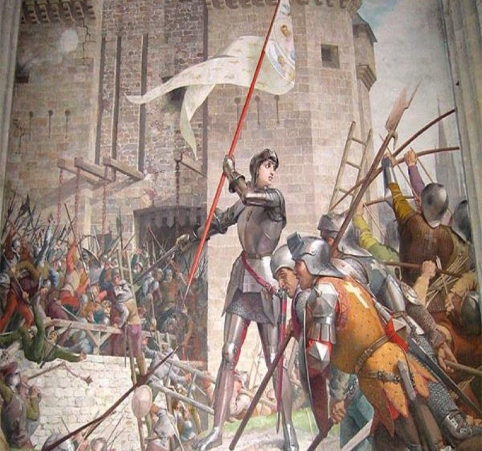

O QUE FOI A GUERRA DOS CEM ANOS
A Guerra dos Cem Anos foi um conflito envolvendo Inglaterra e França entre os anos de 1337 e 1453. Ambientado na França e com duração total de 116 anos, encontra sua origem em questões econômicas e dinásticas pelo trono francês. A guerra é notoriamente uma das mais famosas da história. O conflito, devido à longa duração, ficou marcado por uma série de fatos peculiares, como inovação tecnológica na guerra, Peste Negra e a participação de dezenas de reis. Esta guerra revelou a famosa comandante militar — e atualmente santa — Joana d’Arc.
1.HISTÓRICO DA GUERRA DOS CEM ANOS
Inglaterra e França já possuíam forte rivalidade por diversos motivos, como o domínio inglês de territórios ao norte da França e a clara rivalidade comercial e militar sobre a Europa.
Com o passar do tempo essa faixa territorial na França, ainda que reduzida, mas pertencente à Inglaterra, passou a incomodar grandemente o trono francês que no início do século XIV tentaria confiscá-la, fazendo com que a guerra tivesse início.
Em suma, esse domínio territorial inglês ameaçava a centralização do poder monárquico da França.
2. CAUSAS DA GUERRA DOS CEM ANOS
Apesar do atrito existente entre ingleses e franceses, havia relativa paz. Mas tudo mudou com a morte de Filipe, o Belo, o rei francês. Filipe deixou seu filho Carlos IV como rei, mas este reinado durou pouco. Carlos IV morreu em 1328 sem deixar herdeiros, o que findou a dinastia dos Capeto e abriu a sucessão ao trono francês através dos descendentes do seu pai, Filipe.
Eduardo III era filho de Isabel, filha de Filipe IV, e o vínculo através de sua mãe o impossibilitaria de ascender ao trono da França, que logo foi ocupado por Filipe de Valois (filho do primo de Filipe, o Belo). Durante algum tempo, Eduardo III, neto de Filipe IV, aceitou a sucessão do trono, mas as relações mudaram quando Filipe de Valois, agora Filipe VI, passou a fornecer armamento e suprimentos aos escoceses para que enfrentasse os ingleses. Eduardo III então, como vingança, começou a reivindicar abertamente o trono francês.
3. ESTOPIM DA GUERRA DA GUERRA DOS CEM ANOS
Além das acusações e ameaças mútuas, o rei da França confiscou o território da Aquitânia dos ingleses em 24 de maio de 1337, desencadeando a guerra que há muito se organizava. Eduardo III despachou um exército para que desembarcasse em Flandres. Ao lado de Inglaterra e França uma porção de outros reinos e cidades importantes da Europa fizeram suas apostas, fazendo com que as dimensões do conflito crescessem bastante.

4. FASES DA GUERRA DOS CEM ANOS
Em virtude do longo período, a Guerra dos Cem Anos é tradicionalmente dividida em três fases, quais sejam: Guerra Eduardiana (1337–1360); a Guerra Carolina (1369–1389); e a Guerra de Lancaster (1415–1453). Há um quarto período incluso e referente à trégua que Inglaterra e França (1389–1415) selaram devido a graves problemas internos de cada país.
- Batalha de Sluys (1340): A Inglaterra obteve uma vitória naval.
- Batalha de Azincourt (1415): Henrique V da Inglaterra obteve uma vitória esmagadora.
- Tratado de Troyes (1420): Henrique V foi reconhecido como herdeiro do trono francês.
- Cerco de Orleans (1428 e 1429): Terminou com vitória francesa.